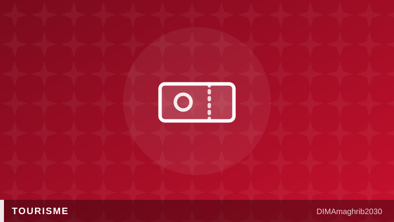

Tourisme : le Maroc vise déjà 30 millions de visiteurs et un chèque-vacances après 2030Beyond 2030: Morocco Plots 30-Million-Visitor Roadmap and a Vacation Voucher Scheme

Les compteurs s'affolent dans le secteur touristique marocain. À fin mai 2026, les recettes voyages ont atteint 53,76 milliards de dirhams, contre 46,91 milliards un an plus tôt, soit un bond de 14,6%, selon les données relayées par Médias24. Un rythme de croissance qui dépasse même celui des arrivées, signe que les touristes dépensent davantage à chaque séjour dans le royaume.
Ce dynamisme n'est pas passé inaperçu à Rabat. L'objectif officiel de la Vision 2030 tablait sur 26 millions de visiteurs, un cap déjà en passe d'être largement dépassé. Selon Médias24, l'ampleur de la reprise pousse désormais les autorités à esquisser une feuille de route touristique pour l'après-2030, avec une ambition revue à la hausse : 30 millions de visiteurs et près de 200 milliards de dirhams de recettes touristiques Maroc.
Un chèque-vacances pour démocratiser le tourisme interne
Parmi les pistes envisagées dans cette future feuille de route touristique Maroc 2026-2030 figure un dispositif inspiré de modèles européens : le chèque-vacances Maroc. L'idée, encore à l'étude selon les informations de Médias24, viserait à encourager les Marocains à revenus modestes et moyens à voyager davantage à l'intérieur du pays, tout en soutenant la demande domestique face aux fluctuations de la clientèle internationale. Un tel mécanisme s'inscrirait dans une stratégie plus large de diversification des sources de croissance du secteur, entre marchés extérieurs et tourisme national.
Cette ambition budgétaire s'appuie aussi sur un argument de poids pour convaincre les voyageurs étrangers : la sécurité. Le Maroc s'est hissé au rang de destination touristique la plus sûre d'Afrique, avec la 1ère place du continent et un 42e rang mondial, selon l'indice HelloSafe Tourist Safety Index cité par Médias24, qui attribue au royaume un score de 73,25 sur 100. Un atout marketing de taille alors que le tourisme Maroc 2030 mise autant sur le volume que sur la qualité de l'expérience proposée.
Marhaba 2026 et les nouvelles routes maritimes
Sur le terrain, les infrastructures se préparent déjà à absorber cette croissance. À Tanger, l'inauguration du ferry GNV Aurora vient renforcer les liaisons maritimes entre le Maroc, l'Espagne et l'Italie, rapporte Premiumtravelnews. Cette nouvelle capacité tombe à point nommé à l'approche de l'Opération Marhaba 2026, le grand retour estival des Marocains résidant à l'étranger, qui mobilise chaque année ports, aéroports et postes-frontières dans un effort logistique considérable.
Les chiffres du mois de juillet confirment déjà cette dynamique : selon le ministère du Tourisme, 2,7 millions de touristes ont été enregistrés durant le mois, en hausse de 6%. Entre recettes en forte hausse, statut de destination la plus sûre du continent, et projets de chèque-vacances pour irriguer le tourisme interne, le Maroc semble déterminé à transformer l'échéance de 2030 en simple étape vers un objectif encore plus ambitieux.
Morocco's tourism sector is posting numbers that are outrunning even its own optimistic targets. Travel receipts hit 53.76 billion dirhams by the end of May 2026, up from 46.91 billion dirhams a year earlier — a 14.6% jump, according to figures reported by Médias24. Notably, that growth in Morocco tourism revenue 2026 is outpacing the rise in arrivals, suggesting visitors are spending more per trip than ever before.
The momentum has caught the attention of officials in Rabat. The kingdom's official Vision 2030 target called for 26 million visitors, a figure that now looks within easy reach — or already surpassed. Médias24 reports that the strength of the rebound is pushing authorities to draft a new post-2030 tourism roadmap with far more ambitious numbers on the table: 30 million visitors and nearly 200 billion dirhams in receipts.
A vacation voucher to widen the tourism base
Among the ideas being floated for this new tourisme Maroc 2030 strategy is a mechanism borrowed from European models: a "chèque-vacances," or vacation voucher scheme. According to Médias24, the plan — still under discussion — would aim to make travel more accessible for low- and middle-income Moroccan households, encouraging them to explore their own country while cushioning the sector against swings in international demand. It would fit into a broader feuille de route touristique Maroc designed to diversify growth between inbound tourism and domestic travel.
Backing up this ambitious math is a selling point few competitors can match: safety. Morocco has been ranked the safest tourism destination in Africa, taking first place on the continent and 42nd worldwide, according to the HelloSafe Tourist Safety Index cited by Médias24, which gave the kingdom a score of 73.25 out of 100. For a country positioning itself as Morocco safest destination Africa in marketing campaigns aimed at Europe and beyond, that ranking is more than a talking point — it is a competitive edge.
Marhaba 2026 and new maritime links
On the ground, infrastructure is already scaling up to handle the surge. In Tangier, the inauguration of the GNV Aurora ferry has strengthened maritime links between Morocco, Spain and Italy, according to Premiumtravelnews. The added capacity arrives just in time for Operation Marhaba 2026, the annual summer return of Moroccans living abroad, a logistical undertaking that puts ports, airports and border crossings under intense pressure every year.
July's numbers already reflect the momentum: the Moroccan Ministry of Tourism recorded 2.7 million tourists during the month, up 6% year-on-year. Between surging travel receipts, a continent-topping safety ranking, and a vacation voucher scheme designed to bring domestic tourism along for the ride, Morocco appears intent on treating 2030 not as a finish line, but as a stepping stone toward an even bigger goal.